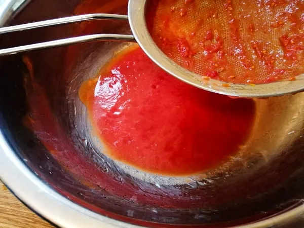

pizza neapolitan
how to make the best neapolitan pizza
ingredients
- for the dough
-
- flour 640 g
- water (room temperature)
- salt
- yeast dried or fresh 0.2 to 0.5
- for the toppings
-
- 300g tin of plum tomatoes
- tomato puree (optional)
- salt
- mozzarella 2 bags of fresh mozzarella
- olive oil (a few splashes
steps and methods
for the dough
- Mix all the ingredients into a shaggy mass in a large bowl, starting by adding the water first. You can do this by hand or use a wooden spoon.
- Leave the dough to rest for around 1 hour
- Turn the dough out onto the counter and knead for around 5 minutes
- Leave the dough to prove
- Divide the dough into 4 equal parts (250g each) using some kitchen scales and a knife (or dough scraper)
- Leave the dough balls to prove again for about 4-6 hours.
for the tomato sauce
tips:
- Do not skimp on the tomatoes, quality tinned tomatoes are key to this simple sauce
- Instead of cooking the sauce, you can thicken it by sieving (after blending) if you prefer
- Blend a tin of quality plum tomatoes into a smooth sauce.
- Cook the sauce until it reaches the desired thickness
- Add a tablespoon or 2 of tomato puree for a richer, sweeter sauce (optional).
- Season with salt and pepper to taste.

for the cooking
- get your oven temperature up about 420"celsius
- stretch the dough into a circle
- spread about two tsp of tomato sauce around the dough
- spread about a handful of mozzarella
- load the pizza into the oven
- there you go l hope u enjoy ur pizza!